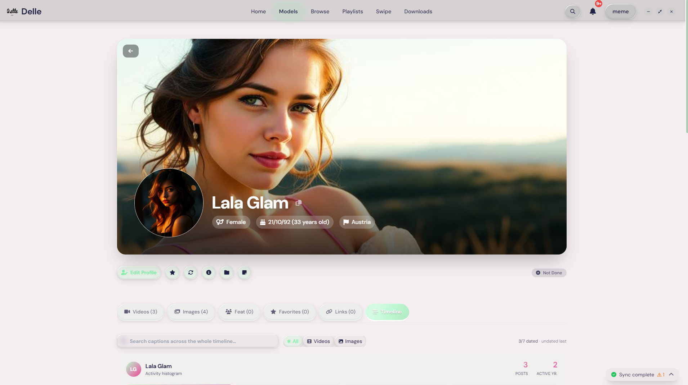

Scroll to zoom · drag to pan · Esc to close
You already use gallery-dl from the terminal. Delle Model gives it a graphical interface — and, unlike a plain download queue, it then turns the result into a real library: one profile per creator, with a built-in viewer, dedup and metadata backfill. 100% local. No account.

Most gallery-dl GUIs stop the moment a file is saved. Delle owns the part that comes after.
Paste a URL and download — Delle drives gallery-dl for you, into the right creator's folder. No config files, no terminal.
After download, subfolders auto-detect as creators. Each one becomes a profile holding all their videos and images — no manual sorting.
Delle reads gallery-dl's sidecar JSON and recovers post dates, descriptions and tags — even onto files you downloaded months ago.
Exact (SHA-256) + perceptual (dHash) hashing finds duplicates and near-duplicates from re-downloads and quality variants, automatically on sync.
A built-in viewer, swipe mode and per-creator feed — so your downloads have context instead of being raw folders you never open.
No cloud, no account, no telemetry. Your library is a portable file you can export in one click and restore on any machine.
Most gallery-dl/yt-dlp front-ends are download-only. Here's the honest difference.
| Capability | Typical gallery-dl GUI | Delle Model |
|---|---|---|
| Run gallery-dl without the CLI | Yes | Yes |
| Also drives yt-dlp | Sometimes | Yes |
| Organize downloads by creator | No | Yes — auto profiles |
| Built-in viewer + swipe mode | No | Yes |
| Metadata backfill from sidecars | No | Yes |
| Duplicate finder (exact + perceptual) | No | Yes |
| Activity timeline | No | When media has dates |
| 100% local · no account | Varies | Yes |
Free closed beta for Windows & Linux (macOS soon). Download the app, or grab a free beta key on Discord.